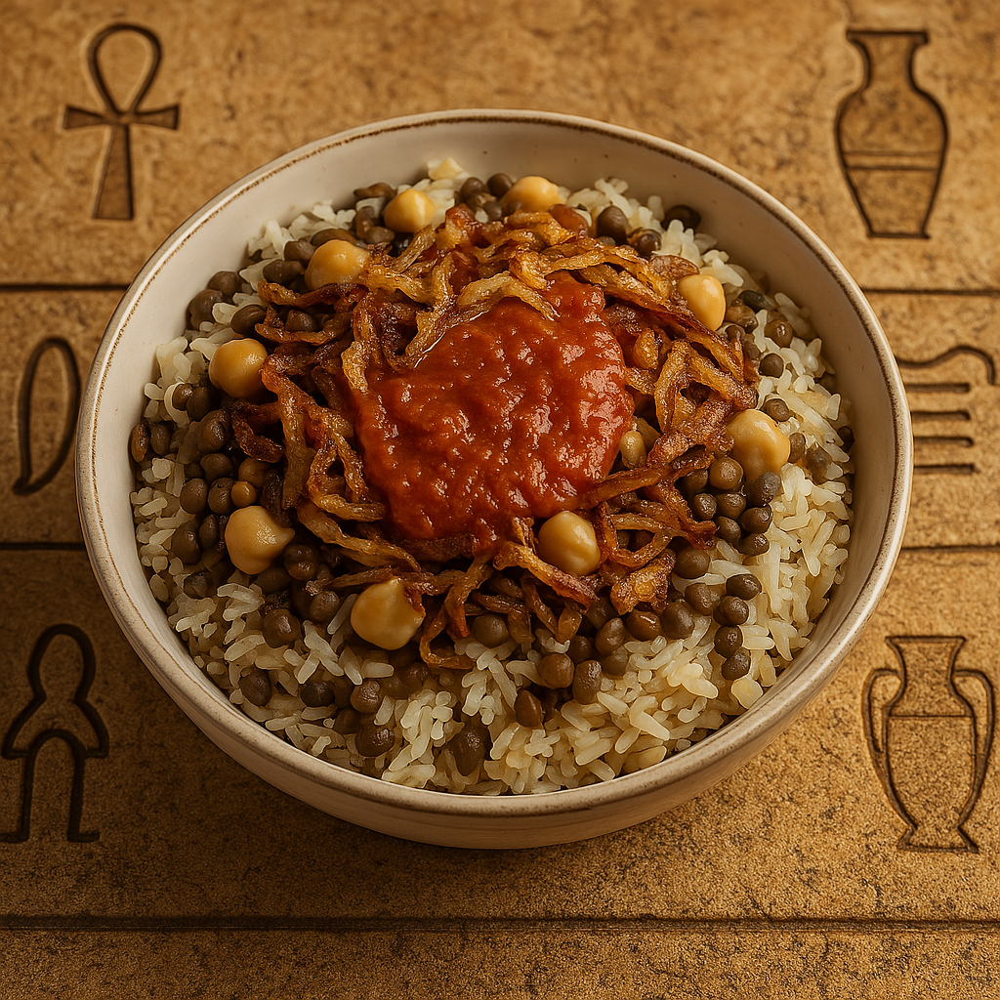

Egypt’s National Street Food
Koshari is a hearty Egyptian dish made with layers of rice, lentils, pasta, chickpeas, and crispy onions, topped with tangy tomato sauce and garlic vinegar. It's affordable, filling, and packed with flavor.
Ingredients:
- 1 cup rice
- 1 cup brown lentils
- 1 cup small pasta (macaroni or ditalini)
- 1/2 cup chickpeas (boiled)
- 2 onions (sliced thin)
- Oil for frying
Tomato Sauce:
- 2 cups tomato puree
- 4 garlic cloves (minced)
- 2 tbsp vinegar
- Salt, cumin, chili flakes
Instructions:
- Boil lentils until tender. Cook rice separately and mix both.
- Boil pasta and set aside. Boil or heat chickpeas.
- Fry onions in oil until dark golden and crispy.
- For the sauce: sauté garlic in a little oil, add vinegar, tomato puree, and spices. Simmer 15 mins.
- Assemble: layer rice/lentils, pasta, chickpeas, sauce, and fried onions on top. Serve warm.